Using the layout.GridBagLayout object.
This is a simple example using the layout.GridBagLayout object to layout a simple figure with widgets. Resize layout is maintained automatically.
Contents
Creating the widgets.
Create the figure, panel and widgets.
f = figure('menubar','none', 'Position', [100 100 400 250]); movegui(f, 'center'); % Create a panel for clear screenshots. p = uipanel('Parent', f); label = uicontrol('parent',p,'style','text','string','Item Name:'); list = uicontrol('parent',p,'style','listbox'); editctrl = uicontrol('parent',p,'style','edit','BackgroundColor','w'); find = uicontrol('parent',p,'style','pushbutton','string','Find'); remove = uicontrol('parent',p,'style','pushbutton','string','Remove'); add = uicontrol('parent',p,'style','pushbutton','string','Add...');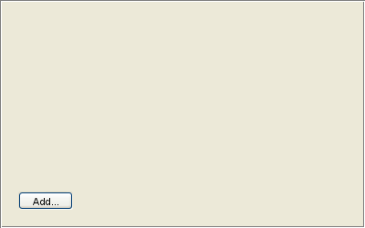
All of the widgets are placed on top of each other because of their default position values. The layout manager will handle this for us.
Creating the LayoutManager
We create a layout manager on the uipanel 'p', but we could also create one on the figure 'f'.
hl = layout.GridBagLayout(p, 'HorizontalGap', 5, 'VerticalGap', 5);
Adding widgets
Here we add the widgets one at a time to see the layout manager work.
hl.add(label, 1, 1, 'MinimumWidth', 80, 'Anchor', 'NorthWest');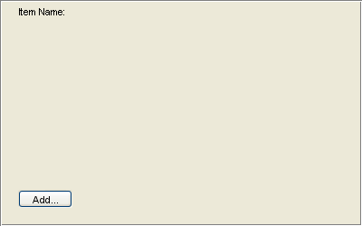
hl.add(editctrl, 1, 2, 'MinimumWidth', 40, 'Fill', 'Horizontal');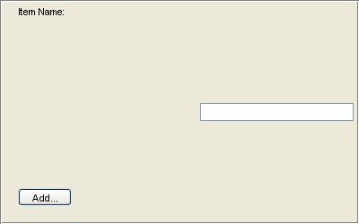
hl.add(find, 1, 3, 'MinimumWidth', 80, 'Anchor', 'NorthEast');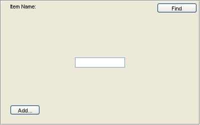
hl.add(list, [2 3], [1 3], 'Fill', 'Both');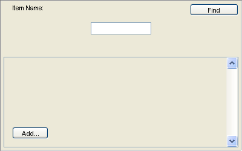
hl.add(remove, 2, 4, 'MinimumWidth', 80);
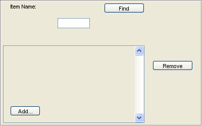 hl.add(add, 3, 4, 'MinimumWidth', 80, 'Anchor', 'NorthWest');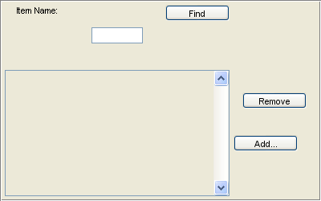
Setting the Weights
After everything is in the correct position, we can set the weights to complete the layout. Notice that even though certain rows and columns have a weight of 0, they still recieve pixels because they have a 'MinimumWidth' and 'MinimumHeight' (defaults to 20).
hl.VerticalWeights = [0 0 1];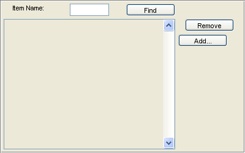
hl.HorizontalWeights = [0 1 0 0];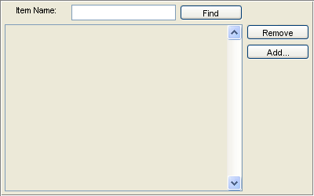
Refining the layout
Notice that the 'Item Name' label is a bit off. Using the power of MATLAB we can quickly iterate here to find our ideal layout settings and these settings can be used in an M-File which specifies the layout of our GUI.
It has a bit too much room. We'll use the Extent property to fit it perfectly.
extent = get(label, 'extent'); setConstraints(hl, 1, 1, 'MinimumWidth', extent(3));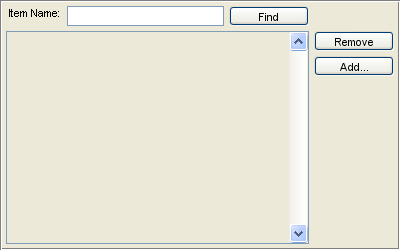
It is a bit too high. We will use the TopInset constraint to adjust it.
setConstraints(hl, 1, 1, 'TopInset', 3);
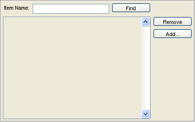 That moved the editbox as well. This is because the editbox is not anchored and is always placed in the center.
setConstraints(hl, 1, 2, 'Anchor', 'NorthWest');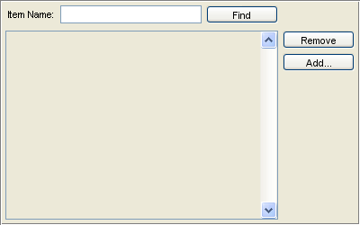
There seems to be a bit more space below the 'Item Name' label than we started with. This is because the MinimumHeight is defaulted to 20, but we only need 17.
setConstraints(hl, 1, 1, 'MinimumHeight', 17);
GridBagLayout is extremely powerful with many options and settings. All of these options seem overwhelming at first, but using the interactive nature of MATLAB it is very easy to iterate over your layouts at the command line. In no time you will be a master of GridBag.